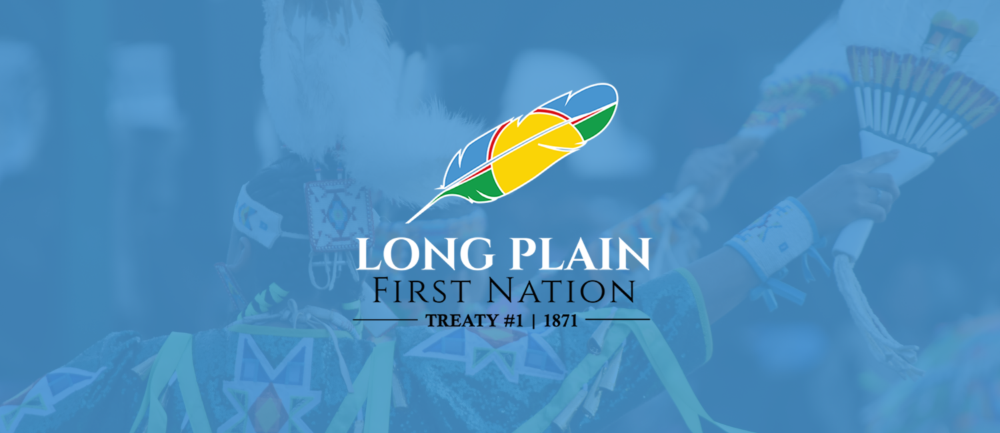
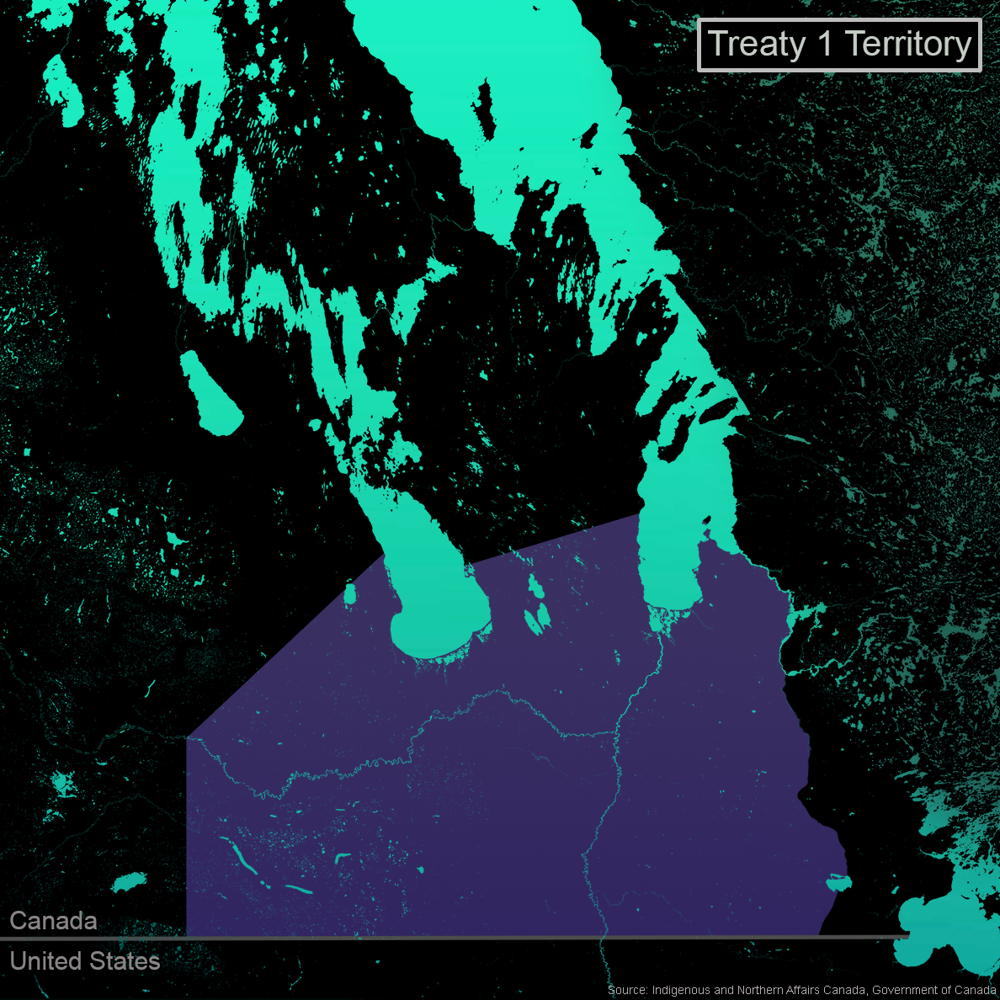
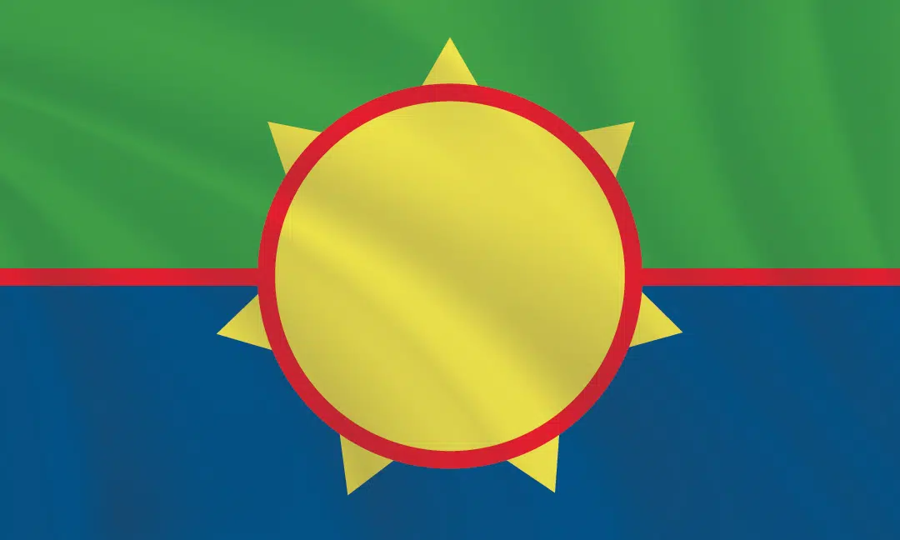

We Are All Treaty People

History of Treaty 1
Treaty 1 was one of the first numbered treaties signed between Indigenous peoples and the British Crown in Canada. The treaty was signed on August 3, 1871, at Lower Fort Garry, which is located north of Winnipeg. This agreement was made between representatives of the British government and several Indigenous nations. The British Crown was represented by Adams George Archibald, who acted on behalf of the British royal family and the Canadian government. On the Indigenous side, the agreement was signed by important community leaders, including several chiefs who represented their nations and spoke for their people during the negotiations. The Indigenous groups involved in Treaty 1 were mainly the Anishinaabe and the Swampy Cree. These nations had lived on and used the land for many generations before the treaty was signed. The treaty affected several First Nations communities that exist today. These include Brokenhead Ojibway Nation, Sagkeeng First Nation, Peguis First Nation, Long Plain First Nation, Roseau River Anishinabe First Nation, and Sandy Bay Ojibway First Nation. These communities received reserve lands as part of the agreement. Geographically, Treaty 1 covers a large area of land in southern Manitoba. This includes Winnipeg and its surrounding areas, the Red River Valley, and most southern Manitoba. Through the treaty, the Indigenous nations agreed to share this land with the Crown so that settlers could move into the region. In return, the Crown promised several things to the Indigenous peoples. These promises included setting aside reserve land for their communities, providing annual payments (called annuities), and offering support such as schools and farming tools. However, over time many Indigenous leaders argued that the government did not fully honor the promises of the treaty.

Treaty 1
Beginning at the international boundary line near its junction with the Lake of the Woods, at a point due north from the centre of Roseau Lake; thence to run due north to the centre of Roseau Lake; thence northward to the centre of White Mouth Lake, otherwise called White Mud Lake; thence by the middle of the lake and the middle of the river issuing therefrom to the mouth thereof in Winnipeg River; thence by the Winnipeg River to its mouth; thence westwardly, including all the islands near the south end of the lake, across the lake to the mouth of Drunken River; thence westwardly to a point on Lake Manitoba half way between Oak Point and the mouth of Swan Creek; thence across Lake Manitoba in a line due west to its western shore; thence in a straight line to the crossing of the rapids on the Assiniboine; thence due south to the international boundary line; and thence eastwardly by the said line to the place of beginning. The following First Nations are Treaty 1: The Brokenhead Ojibway First Nation is located 64 kilometres north of Winnipeg. Fort Alexander First Nation (Sagkeeng) is situated 122 kilometres northeast of Winnipeg. Long Plain First Nation is located 14 kilometres southwest of Portage la Prairie along the Assiniboine River and 98 kilometres west of Winnipeg. Peguis First Nation is located 170 kilometres north of Winnipeg. Roseau River Anishinabe First Nation is located 92 kilometres south of Winnipeg, and is about 20 kilometres north of the Canada/United States border. Sandy Bay First Nation is situated on the west shore of Lake Manitoba about 165 kilometres northwest of Winnipeg. Swan Lake First Nation is located approximately 135 kilometres southeast of Brandon and 175 kilometres southwest of Winnipeg.

Treaty 1 stipulates
Negotiations: The talks lasted eight days and involved over a thousand First Nations participants. While the Crown sought peaceful land annexation for settlement and agriculture, the Indigenous nations aimed to protect their traditional lands and way of life amidst the decline of the buffalo and settler influx. Written Terms: The written treaty required the nations to surrender a large territory in southern Manitoba. In exchange, the Crown promised reserves (160 acres per family of five), a one-time gratuity of $3 per person, annual annuities, schools, and a prohibition on alcohol reserves.
Communities Involved
Several Indigenous communities fall under the jurisdiction of the First Treaty. These include the Peguis First Nation, the Sagkeeng First Nation, the Brokenhead Ojibway Nation, the Long Plain First Nation, and the Roseau River Anishinabe First Nation. Most of these communities belong to the Anishinabe and Swamp Cree ethnic groups.
What is make they different than other treaty
Treaty I, signed in 1871, was one of Canada's earliest digital treaties, serving as a template for subsequent treaties. However, Treaty I is most notable for its inclusion of "verbal promises." During negotiations, government representatives made verbal promises to Indigenous leaders regarding additional supplies, agricultural tools, and clothing to secure their agreement. These promises were not formally included in the written treaty. Indigenous leaders later pointed out that their agreement was based on their belief in these verbal promises. Because these promises existed only verbally and not in the treaty text, they are referred to as "external promises." This discrepancy had profound consequences: it fostered distrust of the government among Indigenous communities and impacted subsequent treaty negotiations. To this day, the controversy surrounding these verbal promises continues, with Indigenous communities demanding that the government acknowledge these promises and provide compensation.

Modern Implementation
Today, Treaty 1 Indigenous communities continue to fulfill their Treaty obligations through economic development and urban reservation projects. This means that the promises made in 1871 are not merely history—they are still being upheld. Indigenous communities are no longer waiting for government action; Instead, they are taking control of their future by creating businesses and developing their land. One example is the Capion Urban Reservation in Winnipeg. This 160-acre site was once a military base called Camp Capion. After years of legal battles, it was returned to seven Treaty 1 Indigenous communities in 2019. Now, it is their land, and they can develop it as they see fit. This reservation will create new business, housing, and cultural opportunities for Treaty 1 Indigenous communities. Business: They plan to build shops, office buildings, and a hotel. This will create jobs and generate revenue to support their communities. Housing: They will build housing that allows Indigenous people to live in the city while remaining part of their Indigenous communities. Cultural opportunities: This reserve will provide space for ceremonies, gatherings, and cultural events. Its design will also reflect Indigenous culture, ensuring their traditions remain vibrant even in an urban environment.